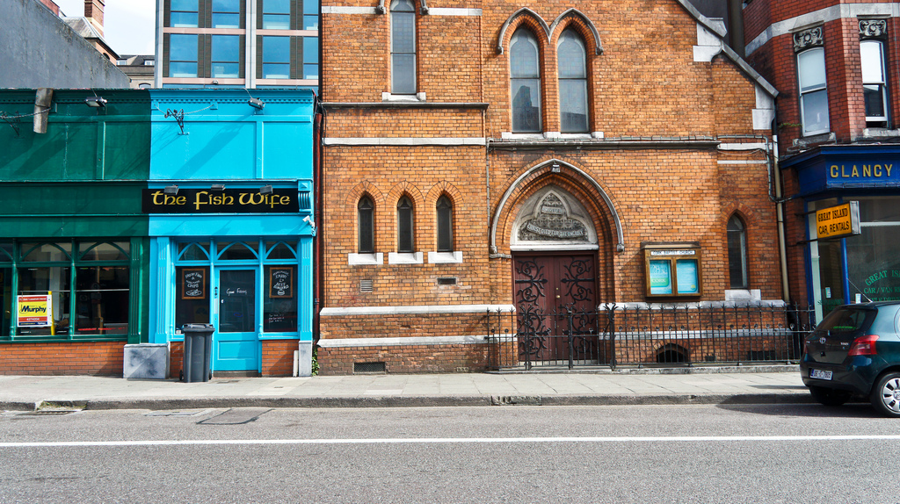

Sharing and Enjoying the Life and Love of the Lord Jesus Christ with the People of Cork
We are an active, Bible-believing church that is committed to sharing the good news of Jesus Christ with the world while serving one another and the wider community of Cork.
As the body of Christ, we are diverse in age, ethnicity, personality, and experience. We seek to show that while the Word of God is living and active and exposes our hearts to the eyes of Him to whom we must give account of our lives (Hebrews 4:12-13), we have a High Priest in Jesus, who sympathizes with our weaknesses, and enables us to receive mercy and grace. All this so that we may hold fast to our confession and confidently draw near to the throne of grace (Hebrews 4:14-16).
You are warmly welcome to draw near to the throne with us at all of our gatherings.